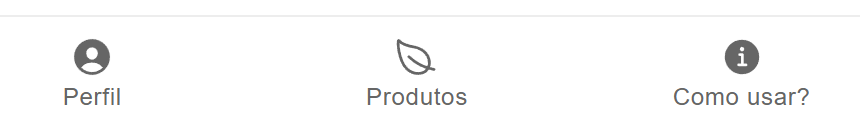

Aplicativo Muda Meu Mundo
Olá, agricultor!
Esse aplicativo foi criado para otimizar o seu trabalho na hora de repassar informações sobre seus produtos, e, assim, tornar suas vendas ainda mais efetivas! Veja aqui como usar seu app e aproveitá-lo da melhor forma!

Perfil
Produtos
Como usar?